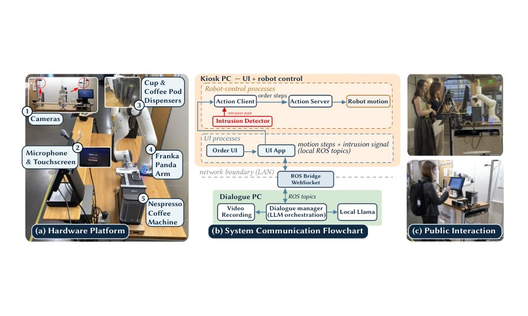
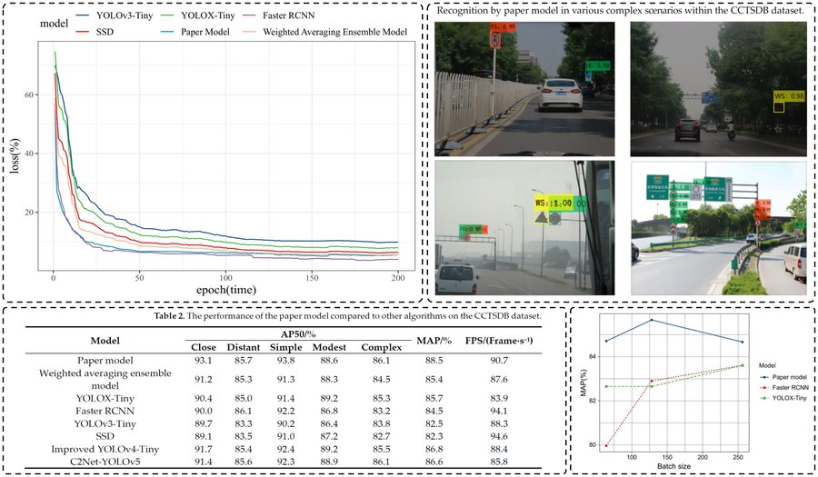
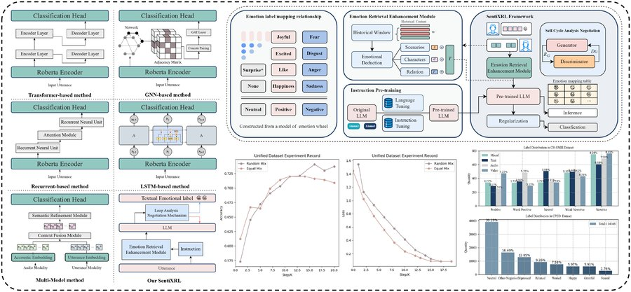

Jie Wang
M.S.E. in Computer Science, Johns Hopkins University
I'm a master's student in Computer Science at Johns Hopkins University, working on embodied AI and robot learning for manipulation. At JHU I work with Prof. Tianmin Shu (SCAI Lab) on simulation benchmarks and data generation for part-level manipulation, and with Prof. Chien-Ming Huang (Intuitive Computing Lab) on long-term human–robot interaction. Previously, I trained and evaluated humanoid manipulation policies at a robotics startup in Berkeley, and worked on quadruped perception at Ant Group.
My interests: robot learning, scalable simulation & data engines, multimodal perception, and human–robot interaction.
News
- Sep 2026RoboCafé, our long-term public HRI study, is on arXiv (under review at ICRA 2027).
- Aug 2026Wrapped up my internship at a robotics startup in Berkeley: humanoid (Booster T1) manipulation, from data collection to real-robot evaluation.
- Jul 2026AXIS, a community-driven data engine for robot manipulation, is on arXiv; to appear at the IROS 2026 Workshop on Physical World Models.
- Oct 2025Presented VTD (RA-L) at IROS 2025.
- Sep 2025Started my M.S.E. in Computer Science at Johns Hopkins University.
Publications




Earlier work (3)





Recent Work
An Isaac Sim benchmark for fine-grained part-level manipulation with articulated assets, compositional tasks, multiple embodiments, and sim-to-real evaluation. I build the scalable data-generation pipeline: domain randomization, grasp generation, motion planning, and control.
Hands-on
- Real robotsBooster T1 (humanoid), Franka Emika Panda, Franka FR3, Unitree Go2 (quadruped)
- Robot learningTeleoperation data collection, policy pre-/post-training, real-robot evaluation
- SimulationIsaac Sim, MuJoCo, PyBullet
- ToolsROS / ROS 2, cuRobo, PyTorch, Python, C++
Experience
- Research Assistant, SCAI Lab & Intuitive Computing Lab, Johns Hopkins University2025 – now
- Research Intern, Robotics Startup, Berkeley — humanoid (Booster T1) manipulation, pre-/post-training, real-robot eval2026
- Research Intern, Ant Group (Robbyant), Shanghai — quadruped perception, depth completion2025
- Research Assistant, Pervasive Intelligence Lab, HKUST2024 – 2025
- Research Assistant, Shanghai Research Institute for Intelligent Autonomous Systems2022 – 2023
- Co-founder & CEO, Shanghai Beseen Technology — VR/AR + deep learning for mental well-being2022 – 2025
Education
- M.S.E. in Computer Science, Johns Hopkins University2025 – now
- B.S. in Computer Science, Tongji University2020 – 2024